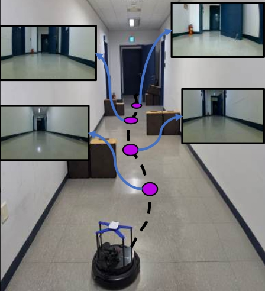
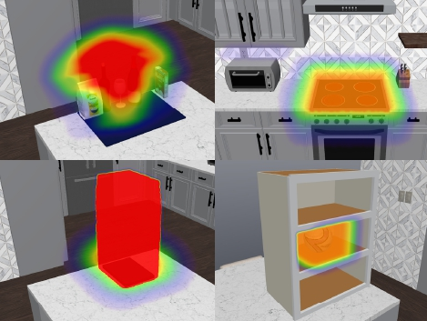

SAFER-Nav: Enhancing Safety for Visual Robot Navigation via Segmentation-Aware Fine-Tuning
Under review, Conference on Robot Learning (CoRL), 2026
Undergraduate Researcher in Robot Safety
I study robot safety, safe learning-based systems, visual navigation, risk-aware planning, and multi-robot systems. My work focuses on identifying and reducing safety blind spots in learning-based robotic systems so robots can navigate and manipulate more safely in real-world environments.
I am an undergraduate student in Computer Science at Rice University, with a minor in Statistics. My research interests lie in robot safety, safe learning-based systems, visual navigation, risk-aware planning, and multi-robot systems.
In the long term, I am interested in developing robots that can navigate, manipulate, and coordinate safely in complex real-world environments, especially settings where heterogeneous robots must interact with people, infrastructure, and other robotic agents.
Rice University, George R. Brown School of Engineering (Houston, TX)
Bachelor of Science in Computer Science, Minor in Statistics
Expected May 2027
GPA: 3.77/4.0

Under review, Conference on Robot Learning (CoRL), 2026

Manuscript in preparation for ICRA 2027
*Equal contribution.